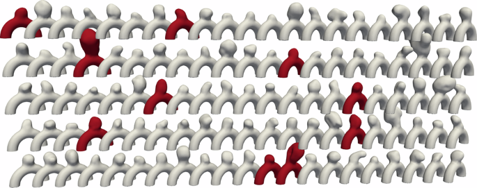
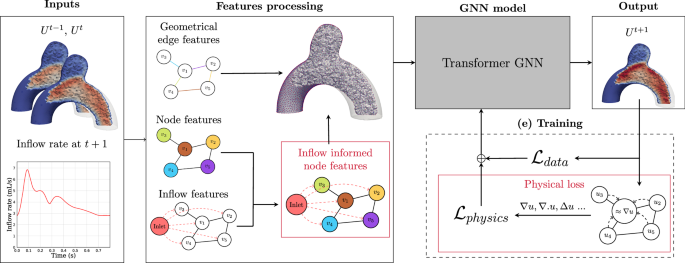

PAPER AT A GLANCE
Transient velocity rollout on 105 semi-idealized aneurysm meshes.
저자들은 patient-derived aneurysm bulge와 idealized parent artery를 결합한 semi-idealized geometry에서 CFD velocity field를 예측한다. 핵심 비교는 baseline MGN, physics-only, inflow-enhanced, inflow+physics(In-PI-MGN)이다. 이는 real clinical outcome model이 아니라 simulation surrogate 연구다.
ORIGINAL FIGURES · CC BY 4.0
What the authors actually modeled


REPRODUCTION SPECIFICATION
Inputs, model variants, and evidence
| Element | Paper description | Our reproduction rule |
|---|---|---|
| Geometry | 105 semi-idealized ICA sidewall meshes | Use BenchAnXplore XDMF geometry; preserve case-level split |
| State | time-resolved 3D velocity, 80 timesteps | Parse XDMF semantic field mapping, not anonymous HDF5 keys alone |
| Architecture | MGN with 15 message-passing rounds; ~3M parameters | establish MGN baseline before additions |
| Enhancements | inflow/acceleration feature; physics-informed loss | ablate one factor at a time on identical split/horizon |
| Evaluation | 1-step/50-step RMSE, region-wise analysis, OOD tests | report global + wall/interior + bulge/neck, plus flux residual |
논문은 In-PI-MGN의 50-step error가 MGN baseline보다 6배 이상 낮다고 보고한다. 이 수치는 저자들의 data/split/training setting에서의 결과이며, 우리 archive parse·implementation에서 재현돼야만 본 프로젝트의 결과가 된다.
WHAT TO IMPLEMENT
From raw archive to a defensible comparison
# 1. Exact source audit
python ../scripts/inspect_hdf5.py CASE.h5 manifests/CASE_h5.json
rg 'Attribute Name|Time Value|TopologyType' CASE.xdmf
# 2. Field contract confirmed from XDMF
# data0 = XYZ; data1 = tetra connectivity
# data(2+2t) = Vitesse [N,3]; data(3+2t) = wall_mask [N]
# 3. Reproduction sequence
# MGN baseline → +inflow → +physics → +inflow+physics
# use geometry-disjoint 95/10 split and fixed rollout horizons
# archive raw config, seed, optimizer, normalizer, unit assumptionsCRITICAL READING
Strong surrogate result, bounded translation.
이 논문은 unstructured transient aneurysm flow surrogate의 중요한 benchmark와 architecture evidence를 제공한다. 동시에 shared idealized parent vessel, limited geometry diversity, CFD assumptions, and lack of prospective clinical endpoint은 분명한 boundary다.